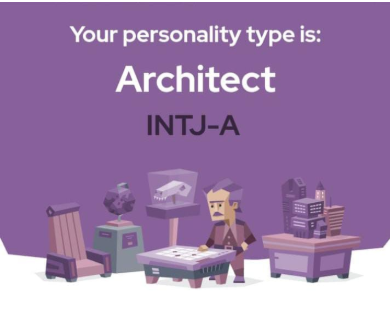
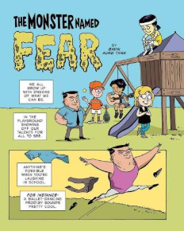
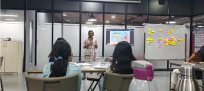
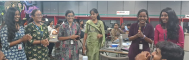
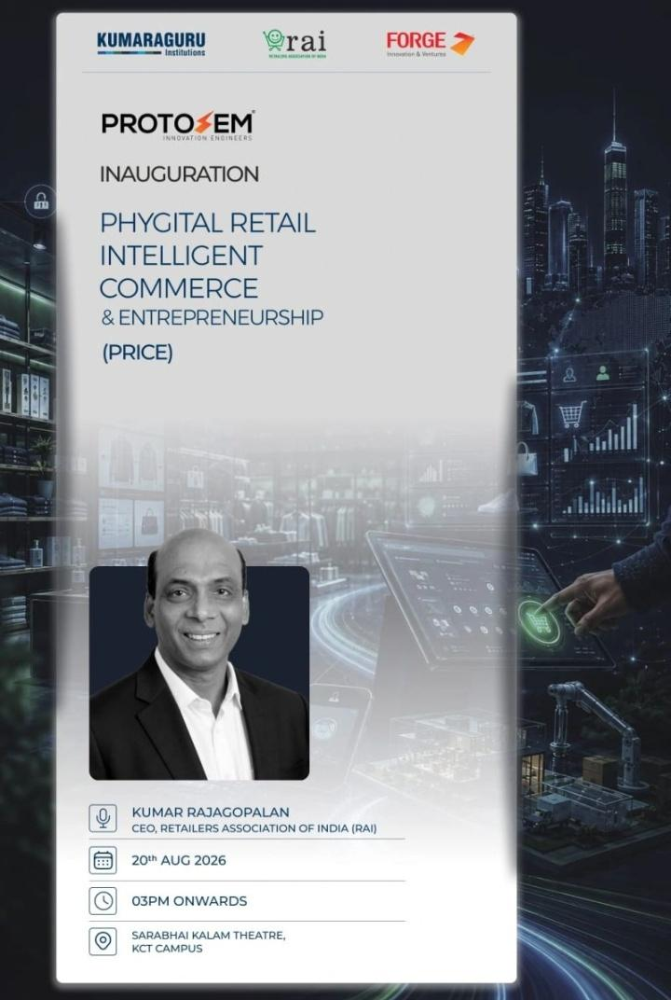
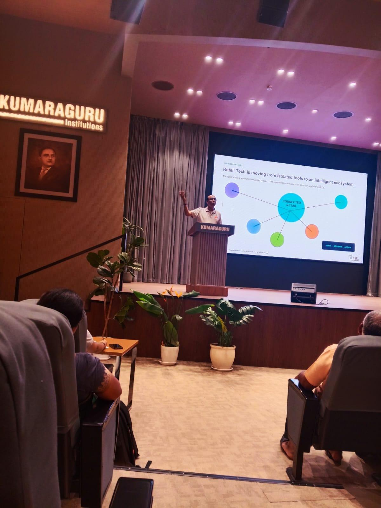
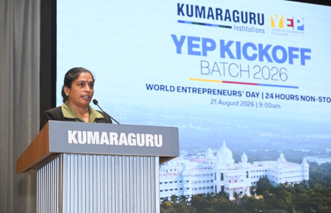

🛫 PRICE PROTOSEM: Beyond the Walls of Classrooms
PROTOSEM! Sounds distinct and intriguing. While it might sound like just a semester for prototyping, its true impact and experiential learning reach far beyond conventional classroom walls into the intricate, fast-evolving world of tomorrow.
What is PRICE PROTOSEM?
PRICE stands for Phygital Retail Intelligent Commerce & Entrepreneurship. It is an innovation-centric semester programme offered across KCLAS (Kumaraguru College of Liberal Arts and Science), KCT (Kumaraguru College of Technology), and KSI (Kumaraguru School of Innovation) in partnership with FORGE and industry leaders.
This is not merely a cohort of students from differing streams; it is a cross-pollination of interdisciplinary ideas and perspectives united under a singular objective: to solve real-world problems with high-impact solutions.
The Flight Takeoff Metaphor
Commencing Protosem in Week 0 is like the takeoff of a flight: to reach any destination, the primary imperative is simply to get airborne. We may not foresee every turn of the ending, but to experience its fullness, we have to embrace the runway and get started.
⚡ Day 1: Ice Breakers & The Speed of Action
Stepping into the workspace with high expectations, curiosity, excitement, and a subtle hidden feeling of uncertainty.
Lesson #1: Action Beats Waiting for Perfection
As a standard opening practice, everyone was asked to introduce themselves randomly rather than in roll order. In a conventional classroom, I was always the first to raise my hand and kick off conversations. But here in Protosem, before I could even deliberate or hesitate, confident voices filled the room without pause.
Key Takeaway from Day 1
“Taking an action is always better than waiting for the perfect time.” In high-velocity innovation environments, initiative and presence define momentum.
Breaking Barriers: Rock, Paper, Scissors & 3-Step Solutions
To dismantle social awkwardness, our mentors initiated an energetic round of Rock, Paper, Scissors where we moved across the floor and struck up conversations with people we had never met before. What seemed like a simple childhood game instantly dissolved peer barriers.
This was followed by an intense problem-formulation sprint: identifying a societal problem and developing a 3-step structured solution.
Problem Identification
Observing real-world friction points and everyday challenges faced by ordinary citizens.
Root Cause Deconstruction
Analyzing underlying behavioral, infrastructural, and economic variables.
3-Step Actionable Solution
Formulating a high-impact, pragmatic blueprint that balances desirability and viability.
🔍 Day 2: Discover & Present — The Identity Blueprint
From professional social media presence on LinkedIn to introspective 16 Personality profiling and narrative storytelling.
1. LinkedIn & Digital Persona Mastery
Day 2 kicked off with an expert-led session on LinkedIn branding. Even as an active user, the session provided fresh tactical clarity on curating a professional profile, articulating skill matrices, and navigating the nuances of what to post vs. what to avoid.
2. 16 Personality Test: The ARCHITECT (INTJ-A)
We underwent the comprehensive 16 Personality assessment. Pausing and honestly answering behavioral queries helped decode innate decision patterns, analytical tendencies, and strategic instincts under pressure.
Imaginative yet decisive, ambitious yet private, amazingly curious, but never wasting energy.

3. Storytelling: “The Monster Named Fear”
The highlight of Day 2 was selecting a comic narrative from ZEN PENCILS that mirrored our inner self and presenting it before the cohort. I selected “The Monster Named Fear” by Gavin Aung Than — a deeply personal resonance with my younger self and the psychological barriers we learn to conquer.


🧩 Day 3: Team Dynamics, Games & Rapid Prototyping
Defense analytics briefings, interpersonal detective games, market brand betting, and the classic Marshmallow Engineering Challenge.
1. IDEX Tech Talk: Defense Analytics
The morning commenced with an insightful IDEX briefing introducing defense analytics workflows and outlining expectations for peer-led Tech Talks scheduled on a rotational basis throughout the semester.
2. The Imposter Game & Brand Battle
Teams engaged in a fast-paced Imposter Game where groups had to deduce the secret imposter team based purely on behavioral cues, micro-reactions, and social dynamics. Following this, we competed in a Brand Naming Battle, betting against rivals on the number of industry-specific enterprise brands we could recall—a direct test of our commercial awareness as consumers.

3. The Marshmallow Challenge: An Engineering Reality Check
The signature activity of the day: building the tallest freestanding structure using only spaghetti sticks, a length of thread, and masking tape, crowned with a marshmallow on top within a strict time constraint.
⚠️ Challenge Hurdles & Mistakes
- Tape Measurement Slip: Miscalculated the required tape length during mentor procurement.
- Structural Instability: The spaghetti base was insufficiently braced to support the top load.
- Time Disqualification: Our team kept adjusting beyond the countdown buzzer.
💡 Core Learnings & Realizations
- Instruction Precision: Most errors stemmed from ambiguous interpretation of guidelines.
- Rapid Iterative Testing: Early testing with the marshmallow beats late-stage topping.
- Fun in Failure: Disqualification provided the most memorable and profound structural lesson.
🎙️ Day 4: Learning & Launch — The Grand Inauguration
The formal inauguration of PRICE PROTOSEM by RAI CEO Mr. Kumar Rajagopalan, and a defining personal milestone addressing the stage.
“Retail Tech is moving from isolated tools to an intelligent ecosystem where customer signals, store operations, and business decisions unite in one continuous learning loop.”


Personal Milestone: Views & Voices on the Big Stage
The pinnacle moment of my Week 0: I was honored to be one of the student representatives delivering the “Views and Voices” address in front of university dignitaries, industry stalwarts, and the full cohort at Sarabhai Kalam Theater.
This was my very first time addressing an audience of this magnitude in my collegiate journey. Though practice sessions were fraught with anxiety and nervousness, when the spotlight turned on, I delivered our cohort's vision confidently, passionately, and flawlessly.

🚀 Day 5: Entrepreneurs' Day — Market Realities & Scaling
World Entrepreneurs' Day and YEP Kickoff Batch 2026: Engaging directly with startup founders and commercial leaders.
A high-energy day celebrating World Entrepreneurs' Day with the kickoff of the Young Entrepreneur Programme (YEP). The forum hosted inspiring dialogues with seasoned business builders who decoded the journey of product-market fit, capital allocation, and sustainable growth.
“Building an enduring retail brand requires deep grassroots trust, relentless operational rigor, and staying attuned to local consumer shifts.”
“Discovering a genuine unmet customer pain-point and crafting an intuitive, delightful phygital experience is the foundation of modern commerce.”


💎 Reflections & The 4 Pillars of Week 0
Week 0 was not just an orientation; it was a mindset transformation. Here are the core synthesis pillars steering the journey ahead.
1. Instant Action
Perfection is the enemy of progress. Taking swift, calculated initiative creates early feedback loops.
2. Self-Awareness
Understanding individual strengths (ARCHITECT INTJ-A) empowers more harmonious team contribution.
3. Interdisciplinary Synergy
When Arts, Engineering, and Tech synthesize, solutions achieve true desirability, feasibility, and viability.
4. Stage Courage
Overcoming internal hesitations to articulate vision with authority on public platforms.
The Road Ahead
From feeling initial uncertainty on Day 1 to addressing a packed auditorium on Day 4 and debating venture models with founders on Day 5, Week 0 has set a formidable foundation. Looking forward to translating ideas into tangible prototypes in the weeks to come!